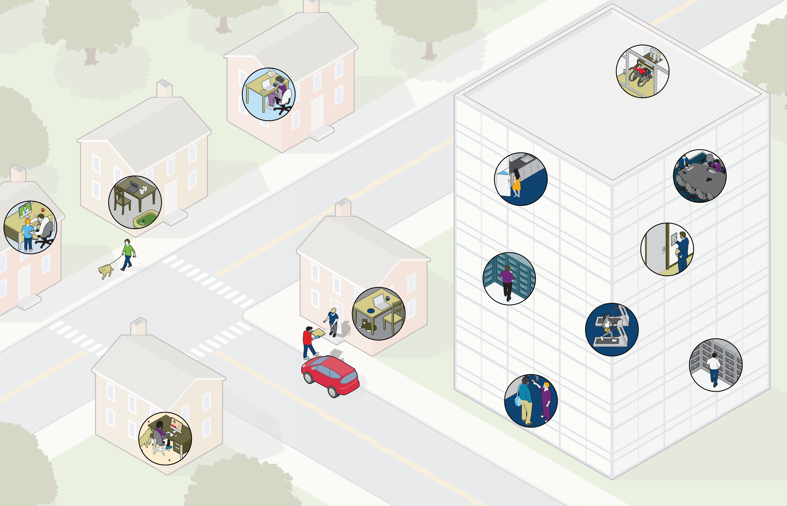

The Future of Work: What We’ve Learned and Where We’re Going
As we look ahead, it’s not just the pandemic that will influence the future of work. Mitigation of environmental, social and governance (ESG) risks and expectations, supply chain risk, and other business and societal considerations such as diversity, equity and inclusion (DEI) initiatives and aging workforce will all play a role in an employers’ vision. The idea of recovery, then, is likely to continue well past the pandemic. As the world continues to wrestle with ongoing COVID-19 challenges, the phrase many have been hearing for some time, the “new normal,” is actually starting to take shape. Because much remains uncertain, a best practices recommendation is to be ready to adapt, learn from others, and communicate effectively and often—and to put change management at the forefront of every strategy.
There are changes ahead, but with a leading vision, planning and actions, companies can not only manage these changes but build on them to potentially thrive. As a follow up to
our earlier perspective on a new vision for a workplace, we examine what companies have learned and how they’re applying those lessons.
The lingering COVID-19 pandemic has fundamentally altered how many companies approach critical parts of their business and how they approach business continuity management. Today, many have a new vision for the workplace, from the employer’s role in employee wellness to a changing definition of a work environment—it’s no longer simply the office.
Choose highlighted areas to learn more

Flexible, agile, results-oriented operating models are setting companies apart. By building agility and cross-functional teaming into models and processes, companies are extracting more value from their people and structures.
Operations
Doing a gap analysis is critical for operational leaders to identify weaknesses in their business continuity management and overall business strategies. For instance, many companies are realizing that while they’d like to automate more processes to maintain continuity and reduce the impact of risk, they lack the digital know-how to make such a large operational change. A gap analysis can help understand what to prioritize to make meaningful operational changes.
Operations
HR is also focused on how to shift traditional talent approaches. To do so, HR leaders are assessing new workforce preferences and re-architecting jobs and structures that support virtual working. Many are looking at how to guide managers and re-skill them for managing in a remote environment.
Human
resources

Business continuity strategy is also top of mind for HR, as they need to understand how to equip people to respond quickly to change and build people processes and structures that support the company’s overall business continuity management plans.
Human resources

Overall, hiring variables are changing. As companies lean into remote work and the playing field becomes more competitive, they’re now looking more intently for self-starters and team players who can adapt easily to change. Traditionally, compensation was a major motivator for new hires, but now companies are seeking to shift the focus on employees who are motivated by results.
Talent
Talent
Companies have internal talent with institutional knowledge and subject matter expertise, but the way work gets done is changing. Our more virtual, automated work infrastructure means companies should concentrate on making sure their existing talent can apply their knowledge and skills in new ways. One of the biggest talent focuses should be creating an accelerator for existing talent to thrive in a different working environment and operational mode.
Companies realize that while technology investments are valuable, IT also needs to make sure people are using technology effectively. In this way, IT now has a larger role in culture and change management. This is especially important as companies roll out new collaborative tools and self-service platforms.
Information Technology (IT)

Information Technology (IT)
Business continuity management now relies more heavily on cloud computing versus
on-premises platforms, which means companies need to think through cybersecurity considerations, including access from different devices and remote locations.

Many companies are moving to a hoteling system rather than providing permanent offices or desk spaces in their buildings as people are likely to come into the office less frequently. Those that are seeking to sub-lease their office space may find it challenging with the current market surplus.
Real estate


More companies are realizing that regular vendor resiliency reviews and increased management and vetting are critical for long-term strategy. Company leaders need to understand whether a given vendor can help them continually build capabilities and scale, rather than take a “set it and forget” approach. Further, consideration should be given to whether a vendor’s downtime or service disruption will become an issue for the organization.
Vendor
resilience
Now, business continuity and IT disaster recovery requirements are being built into master service agreements so vendors have greater accountability and companies have the transparency they need from them.
Vendor resilience
What employees expect of their employers has changed, largely as a result of the pandemic and other shifts, including focus on DEI and social initiatives. Today’s employees are seeking flexibility to get work done when they need to, rather than working the traditional 9-5 -- and appreciate the option to work from wherever they need to. That is wrapped into an overall focus on wellbeing; to perform at their peak, many employees recognize they also need to care for their wellbeing and rely on their employers for resources and support. They also want more consistent, clear and transparent communication from their employers.
Talent

Companies are incorporating data and analysis into multiple areas of their business, including human resources. The shift to more data-driven decision making is helping shape sharper viewpoints and align leaders on a cohesive vision. HR leaders are also better able to identify risk areas and mitigation strategies armed with more and better data.
Human resources

Back to top
